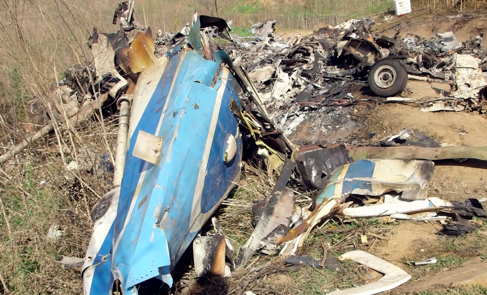
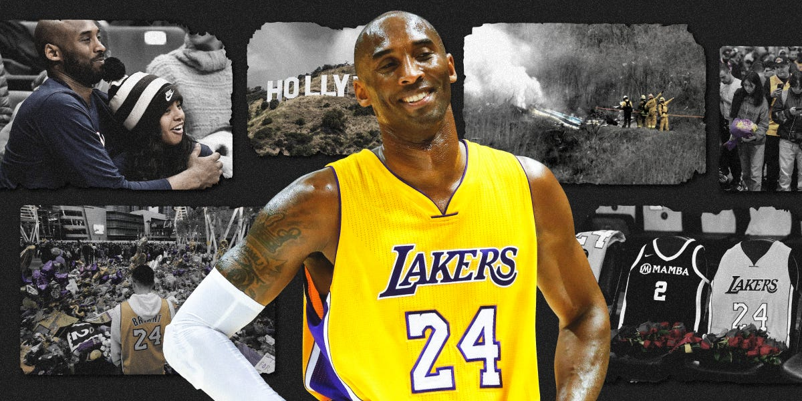
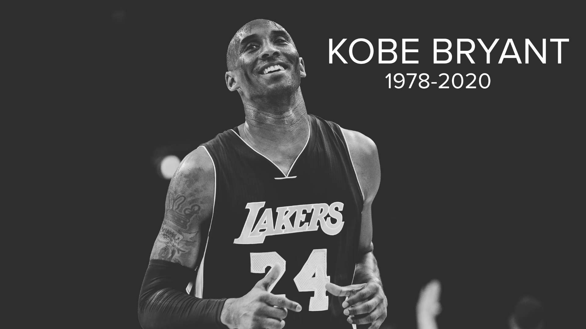
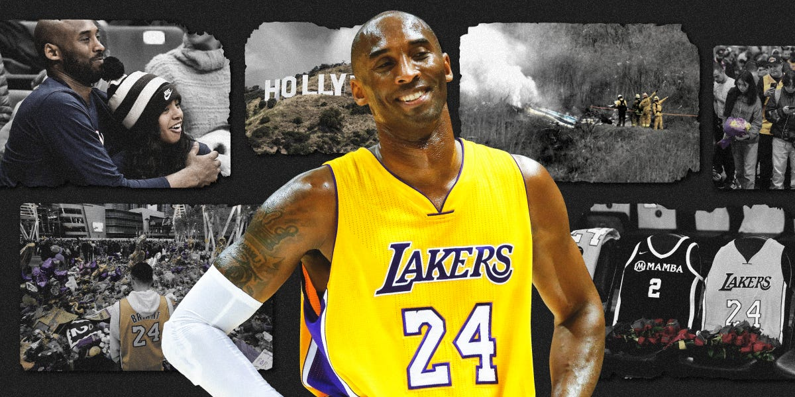
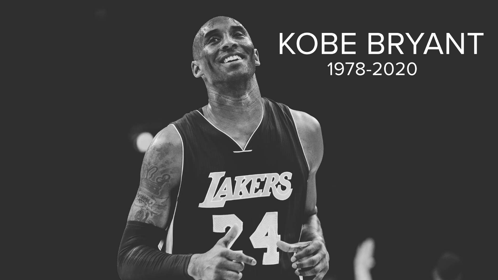

"Jersey Retirement"
On Dec. 18, 2017, the Lakers retired Bryant’s jersey numbers.
He’d worn No. 8 until 2006, when he changed to No. 24. He’d first worn 24 in high school before changing to 33.
Kobe Bryant is the only player in NBA history to have two numbers retired by the same team.
He retired in 2016 and his Los Angeles Lakers jerseys were sent into the rafters at
Staples Center in December 2017 during the halftime ceremony of a Lakers-Warriors game.
In April 2017, Bryant made an animated short film out of his “Dear Basketball” poem.
The following March, he added another trophy to his collection. “Dear Basketball” won the
Oscar for Best Animated short Film at the 90th Academy Awards. The film also took home a Sports Emmy and the Annie Award that year.
What did Kobe Bryant win an Oscar for?
While Bryant's name is synonymous with basketball championships and not necessarily Hollywood award shows, he earned his Oscar in 2018.
Bryant took home the trophy for best animated short film at the ceremony, along with Glen Keane, who animated and directed the short called "Dear Basketball."
It featured music by John Williams, an award-winning composer who worked on "Star Wars" movies, "E.T. the Extra-Terrestrial" and several other classics.
Narrated by Bryant, "Dear Basketball" is a nearly five-and-a-half-minute short illustrating the poem that the Los Angeles Laker wrote for "The Players' Tribune" to announce his retirement in November 2015.
With lines like "I fell in love with you / A love so deep I gave you my all / From my mind and body / To my spirit and soul" and "This season is all I have left to give. / My heart can take the pounding /
My mind can handle the grind / But my body knows it’s time to say goodbye," it's all about letting go and moving on from the sport that Bryant loved deeply.
"Heroes Come and Go, But Legends Are Forver"
On January 26, 2020, a helicopter carrying former pro basketball player Kobe Bryant, his 13-year-old daughter Gianna and seven others crashes in Calabasas,
California, roughly 30 miles north of Los Angeles; everyone on board dies. Bryant’s death sent shockwaves through the American sporting world.
Bryant and his daughter, along with the other passengers, were headed to Gianna’s basketball game at his Mamba Sports Academy in Thousand Oaks, California.
Not long after takeoff, the helicopter crashed in foggy conditions. The accident shocked sports fans across America and around the world.
Bryant had been set to host the Grammy Awards that very evening, and the ceremony became one of the first of countless tributes to him and his daughter.
The Los Angeles Airport, the Empire State Building and the Burj Khalifa were all lit in purple and yellow, the Lakers’ colors, in tribute to Bryant.
Shaquille O’Neal, Bryant’s longtime teammate, sometime rival, and another of the era’s greatest players, said he had “no words to express the pain” he felt at
Bryant’s death, and fellow NBA legend Michael Jordan called Bryant “one of the greats of the game and a creative force.”

 


